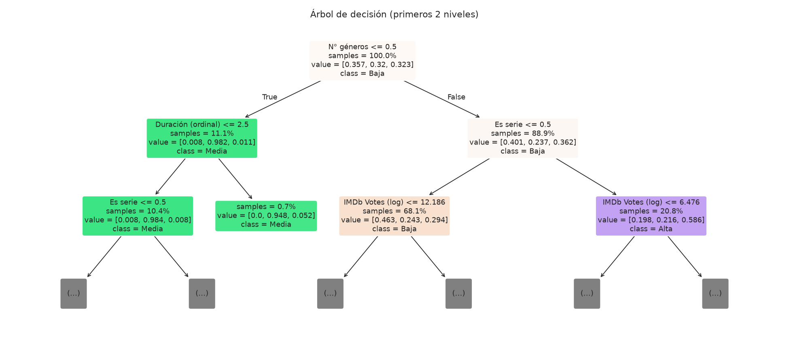
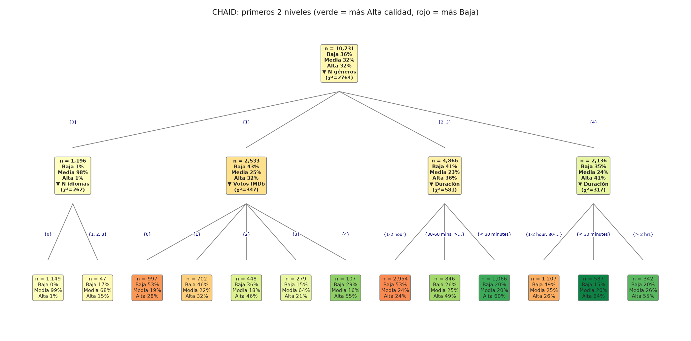
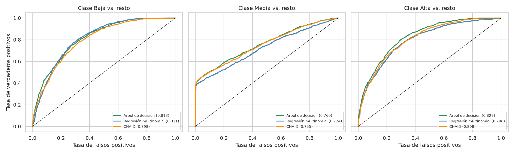
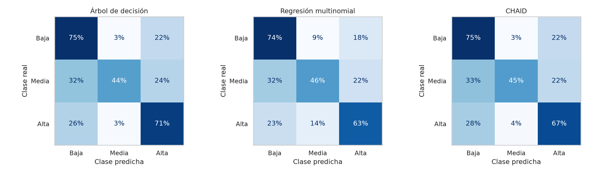
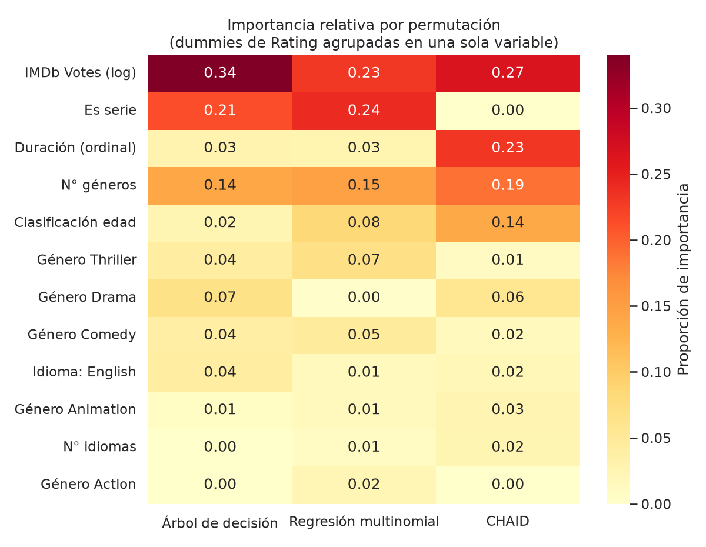

La variable objetivo es la calidad del título según IMDb. Se tomó IMDb Score y se cortó en terciles: Baja (≤ 6.3), Media (6.3 a 6.9) y Alta (> 6.9). Las clases quedan en 35.7%, 32.0% y 32.3%; un modelo que siempre dijera «Baja» acertaría 35.7%.
Los datos se dividieron en 70% entrenamiento (10,731 títulos) y 30% prueba (4,599), estratificados por clase. Se usaron 49 predictoras: votos de IMDb (log), años de estreno y de llegada a Netflix, número de géneros e idiomas, duración, serie/película, inglés, los 12 géneros más frecuentes y la clasificación por edad. Para CHAID, las numéricas se pasaron a quintiles. Los hiperparámetros se eligieron con validación cruzada de 5 pliegues sobre entrenamiento, maximizando el AUC macro uno-contra-resto.
Fuga de información:Hidden Gem Score se dejó fuera de las predictoras. Junto con los votos llega a AUC 0.93 con un árbol sencillo (los votos solos dan 0.68). Al agregarla al modelo, el AUC del árbol sube de 0.80 a 0.95. Rotten Tomatoes y Metacritic se descartaron por tener 59% y 72% de faltantes.
2. Resultados por modelo
Árbol de decisión (profundidad 15, 127 hojas, min_samples_leaf=60): accuracy 0.638 y AUC macro 0.800. La raíz separa a los títulos sin géneros (11.1% del entrenamiento), que son 98% Media. Con géneros divide por Es serie: las películas (68.1%) son 46% Baja y las series (20.8%) son 59% Alta, y en ambas el siguiente corte son los votos. Las variables que más pesan son los votos, Es serie y el número de géneros.
Regresión multinomial (C=100): accuracy 0.615 y AUC 0.778. Es la más estable (la brecha de AUC entre entrenamiento y prueba es casi cero) y la que menos errores graves comete (13.7%). Ser serie, tener más géneros y durar más empujan hacia Alta; Thriller y Comedia, hacia Baja.
CHAID (profundidad 7, 140 hojas): accuracy 0.629 y AUC 0.787. La raíz divide por N géneros (χ² = 2,764). Con 2 o 3 géneros, los títulos de menos de 30 minutos son 60% Alta (n = 1,066) y los de 1 a 2 horas son 53% Baja (n = 2,954). Duración y «Es serie» casi coinciden: 3,739 de las 3,740 series duran menos de 30 minutos.
Los títulos sin géneros (1,708 en total) son casi todos los que tienen la calificación imputada con la mediana: en entrenamiento son 98% Media. El árbol y CHAID los mandan a Media, y por eso su precisión en esa clase es tan alta (0.87 y 0.85).

Árbol de decisión: primeros dos niveles (verde = Media, naranja = Baja, morado = Alta; value = proporciones de [Baja, Media, Alta]).

CHAID: primeros dos niveles (verde = más calidad Alta, rojo = más Baja). Votos IMDb en quintiles, de 0 (menos votos) a 4 (más votos).
3. Comparación
Modelo
Accuracy
Precisión (macro)
Recall (macro)
F1 (macro)
AUC (macro)
Árbol de decisión
0.638
0.685
0.633
0.631
0.800
Regresión multinomial
0.615
0.621
0.610
0.607
0.778
CHAID
0.629
0.673
0.624
0.623
0.787
Métricas sobre el conjunto de prueba (n = 4,599). AUC macro uno-contra-resto.

Curvas ROC uno-contra-resto por clase (entre paréntesis, el AUC).

Matrices de confusión normalizadas por fila (conjunto de prueba).

Importancia relativa por permutación (cada modelo suma 1; las dummies de clasificación por edad se agrupan).
4. Conclusiones
El árbol de decisión tiene el mejor desempeño en accuracy, AUC y F1. CHAID queda muy cerca (unos 40 títulos de diferencia en accuracy y 0.013 de AUC) y la regresión multinomial un poco más abajo.
Los tres coinciden en las variables que más pesan: votos, tipo de título (serie o duración corta) y número de géneros, y después Drama, Thriller, Comedia y la clasificación por edad.
Alta y Baja se separan mejor (AUC por clase de 0.80 a 0.83) que Media (0.72 a 0.76). El recall de Media es el más bajo en los tres (0.44 a 0.47).
Ningún modelo pasa de 64% de accuracy (piso de 35.7%). Con variables de catálogo no se captura la calidad percibida. Con Hidden Gem Score el árbol llegaría a 83%, pero por fuga de información.
Si lo que importa es predecir, el árbol. Si se busca estabilidad y coeficientes fáciles de explicar, la regresión multinomial. CHAID sirve para describir segmentos, leyendo solo sus dos primeros niveles.